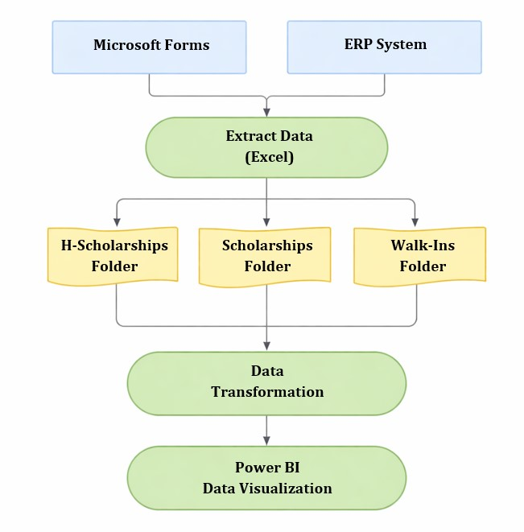
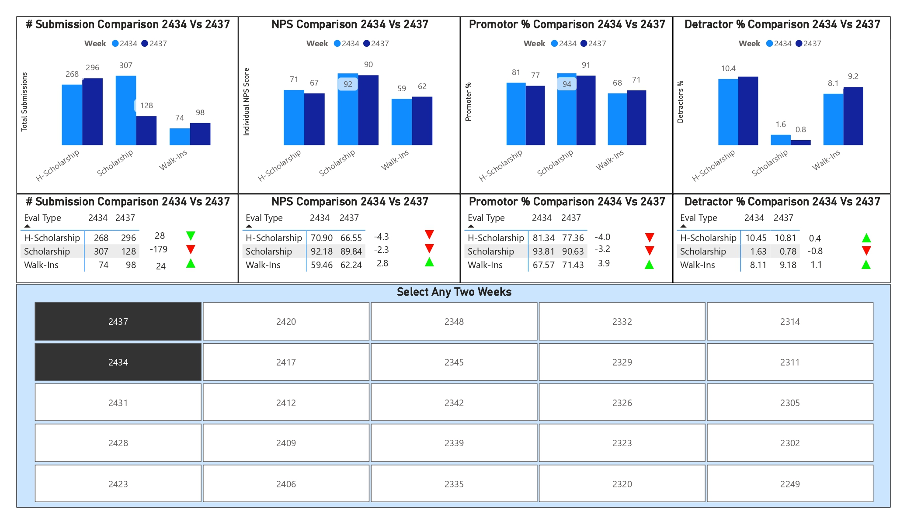
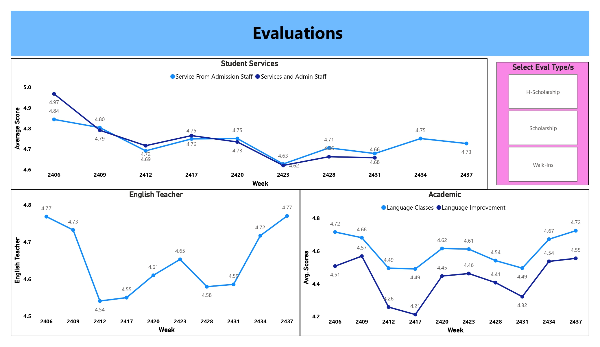

Manual Spreadsheet Processing
Evaluation data required repetitive extraction, cleaning, formula management, and static chart updates.
Developed an automated Power BI analytics solution for EF Saudi Arabia that centralizes weekly student feedback, calculates dynamic Net Promoter Score metrics, compares evaluation periods, and gives operational leaders timely visibility into student satisfaction across Walk-In, Scholarship, and H-Scholarship programs.
Student feedback from more than 6,000 active participants was processed through manual spreadsheet models, creating delays, errors, and limited visibility into satisfaction trends across multiple program types.
Evaluation data required repetitive extraction, cleaning, formula management, and static chart updates.
Weekly NPS calculations took days, reducing the opportunity to address student grievances while they were still actionable.
Operations teams responded after satisfaction issues had already developed instead of detecting negative movement early.
Testing and survey weeks were not automatically consolidated, preventing reliable trend analysis.
Stakeholders could not easily compare Walk-In, Scholarship, and H-Scholarship student satisfaction.
A centralized Power BI reporting platform automated data preparation, NPS calculation, week-to-week comparison, and program-level evaluation analysis.
Extracted, normalized, cleaned, and combined disparate weekly evaluation sheets into a standardized dataset.
Organized evaluation weeks, student program types, submission volumes, and satisfaction measures for scalable analysis.
DAX calculated overall NPS, Promoter %, Detractor %, Passive %, and week-on-week performance changes.
Conditional colours and arrows automatically highlighted satisfaction improvement or decline.
A cross-filtered benchmarking matrix allowed administrators to select and compare any two evaluation periods side by side.
Participation volumes were analyzed alongside satisfaction movement to test whether response volatility influenced results.
Filters enabled instant exploration of Walk-In, Scholarship, and H-Scholarship performance without changing formulas.
A clean management interface supported weekly monitoring, operational review, and academic-service assessment.
The platform supported student experience monitoring across a large, diverse program population.
Walk-In, Scholarship, and H-Scholarship feedback became available in one reporting environment.
Administrators could select any two weeks for direct side-by-side benchmarking.
NPS, Promoter %, Detractor %, and Passive % were calculated consistently through DAX.
Automated refresh replaced multi-day manual NPS calculation, enabling staff to respond to grievances while issues remained actionable.
Leaders gained direct comparison of satisfaction across standard and high-stakes scholarship programs.
Submission volumes and satisfaction scores were evaluated together, producing a more defensible interpretation of brand perception.
Automated data preparation, calculations, filters, and visuals replaced repeated formula and pivot-table updates.
Quantification note: The supplied documents did not provide measured percentage, financial, or time-saving outcomes. Quantification is therefore limited to documented participant scale, program coverage, comparison capability, and automated KPI scope.
Weekly evaluation data is automated from source folders through Power Query and a structured model into interactive NPS reporting.

Microsoft Forms or ERP data flows through Excel evaluation folders, Power Query transformation, and the Power BI semantic and visual layer.



Replace this placeholder with the public Power BI embed URL after publishing the report.
The repository contains project documentation, dashboard screenshots, Power BI implementation details, and supporting analytical assets.
Discover more industry transformation and enterprise analytics projects.